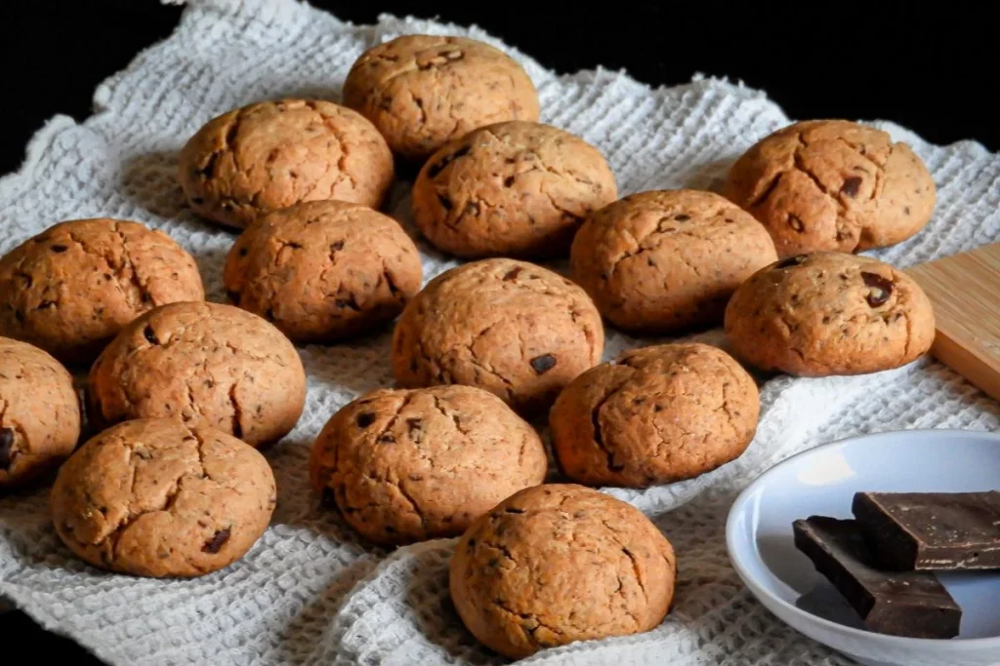
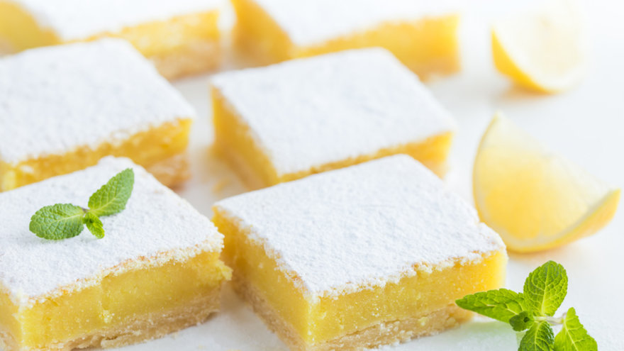
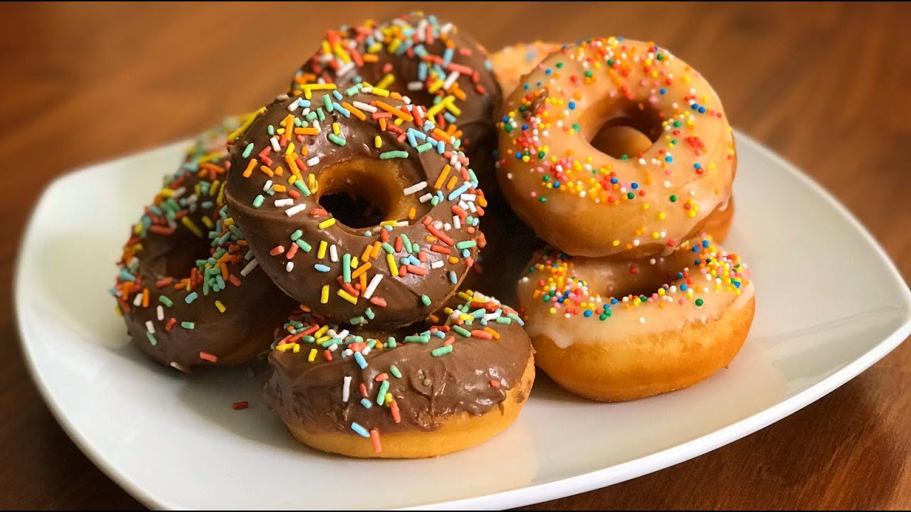

Cookies Sin TACC

Cuadraditos de Limón Sin TACC
Estos cuadraditos de limón son una versión sin gluten de un clásico
dulce y refrescante. Tienen base crujiente y un relleno de limón suave,
perfectos para acompañar con té, café o como postre ligero.
- 200 g de premezcla sin gluten
- 50 g de fécula de maíz
- 80 g de azúcar
- 150 g de manteca fría
- Pizca de sal
- 3 huevos
- 200 g de azúcar
- Ralladura de 2 limones
- Jugo de 2 limones
- 1 cdita de polvo para hornear sin TACC
Para la base, mezclá la premezcla sin gluten, la fécula,
el azúcar y la sal. Incorporá la manteca fría en cubitos y
desintegrá con las yemas de los dedos hasta lograr una textura
arenosa.
Presioná esta mezcla en el fondo de una fuente enmantecada y
llevá a horno precalentado hasta que la base esté dorada.
Mientras tanto, prepará el relleno batiendo los huevos con
el azúcar, la ralladura de limón y el jugo de limón. Sumá
el polvo para hornear y mezclá hasta integrar.
Verté el relleno sobre la base precocida y horneá nuevamente
hasta que el relleno cuaje y tome un color amarillo claro.
Retirá del horno, dejá enfriar y cortá en cuadraditos.
Serví templados o fríos.

Rolls de Canela Sin TACC
Estos rolls de canela sin gluten son tiernos, esponjosos y aromáticos, perfectos
para acompañar el café o el té. Están elaborados con una masa libre de TACC y
rellenos de una mezcla dulce de canela, ideales para disfrutarlos recién hechos.
- 300 g de premezcla sin gluten
- 50 g de azúcar
- 1 cda de psyllium
- 7 g de levadura seca
- 1 huevo
- 60 ml de aceite neutro
- 200 ml de agua tibia
- 1 cdita de canela en polvo
- Azúcar extra para el relleno
- Opcional: un poco de manteca derretida
En un bol mezclá la premezcla sin gluten con la levadura seca, el psyllium y el azúcar.
Agregá el huevo, el aceite y el agua tibia. Integrá todo con cuchara hasta formar una
masa húmeda.
Tapá con un paño y dejá descansar unos minutos hasta que leve ligeramente.
En una superficie limpia con un poco de premezcla, estirá la masa en forma rectangular.
Untá la superficie con un poco de manteca derretida (si lo deseas) y espolvoreá azúcar y
canela por encima.
Enrollá desde uno de los lados largos hasta formar un cilindro. Cortá porciones de 2–3 cm
para formar los rolls.
Colocá los rolls en una placa aceitada o con papel de hornear y dejá que leven un poco más.
Horneá a temperatura media hasta que estén dorados y cocidos por dentro.
Retirá del horno, dejá entibiar y disfrutá tus rolls de canela sin TACC.
Donas Sin TACC
Estas donas sin gluten son suaves por dentro, ligeramente dulces y deliciosas.
Se preparan con ingredientes simples, sin TACC y pueden cocinarse al horno o
fritas según tu preferencia. Son perfectas para acompañar el mate o el café.
- 200 g de premezcla sin gluten
- 30 g de azúcar
- 1 cdita de polvo para hornear sin TACC
- 1 huevo
- 50 ml de aceite neutro
- 120 ml de leche (puede ser vegetal)
- 1 cdita de esencia de vainilla
- Pizca de sal
- Opcional: azúcar o glaseado para decorar
Primero, precalentá el horno a temperatura media si las vas a hornear, o prepará aceite
caliente si las vas a freír.
En un bol mezclá la premezcla sin gluten con el polvo para hornear, el azúcar y la sal.
Hacé un hueco en el centro y agregá el huevo, el aceite, la leche y la esencia de vainilla.
Mezclá con cuchara o espátula hasta formar una masa homogénea.
Volcá la masa sobre una superficie limpia con un poco de premezcla y estirala con las manos
hasta que tenga un grosor de unos 1–1.5 cm. Cortá las donas con un cortador o un vaso y
el centro con un tapón pequeño.
Si las vas a hornear, colocá las donas en una placa con papel de horno y cociná hasta que
estén firmes y doradas. Si las vas a freír, sumergilas en aceite caliente hasta que tomen
color dorado uniforme.
Retirá las donas, dejá enfriar y decorá con azúcar por encima o con el glaseado que prefieras antes de servir.
